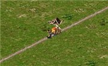
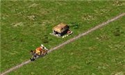
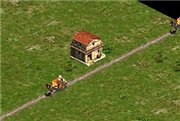
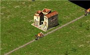
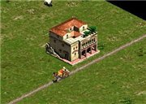
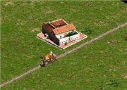
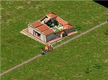
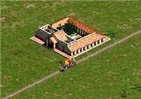
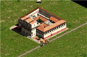

Я помню как играл первый раз в Цезарь 3, это удивительно умная и сбалансированная игра, создает чувство, что город живет своей жизнью и после завершения миссии. Можно провести часы, наблюдая за городом и не вмешиваться в его жизнь: плебеи будут бегать по городу в поисках работы, а патриции жаловаться на неважные условия жизни, торговцы, школьники, лодки, жрецы — этот мир замирает лишь в минуты пауз, давая игроку возможность продумать следующий шаг. Исследуя внутренние алгоритмы игры, я не перестаю удивляться с какой точностью авторы сложили кусочки мозаики, под названием «баланс». За время, проведенное над восстановлением кода оригинальной игры скопилось достаточно материала по макромеханике игры, которым я хочу поделиться с хабрасообществом.
Начинается все с престижности земли, это один из слоев города, которым оперирует игра для расчета параметров миграции и уровня домов. Помимо базовых слоев, взаимосвязь которых показана ниже, каждый слой может дополнительно делиться на части.
В городе люди живут в домах, количество людей и качество жилья меняется с каждым уровнем, у каждого уровня прописан ряд параметров, при достижении которых он переходит на следующий. Как я уже сказал базовым параметром служит престижность земли, другим базовым параметром является снабжение продовольствием: в маленьком городе это может быть незаметно, но в больших городах удаленность амбаров и складов сильно виляет на размещение жилых кварталов на карте. При том, что рынок отрицательно влияет на окружающую территорию и приоритет торговок смещен в сторону снабжения население продуктами, часто возникает ситуация, когда из-за недостатка продовольствия начинает ощущаться дефицит и прочих товаров, прежде всего самых ценных (для развития домов) — глиняной посуды и мебели.Каждый следующий уровень дома требует более дорогостоящих сервисов и ресурсов. Получаем классическую (человеческую) пирамиду потребностей.
На определенном этапе развития дома превращаются в виллы и существенно улучшают рейтинг города, но снижает число рабочих в городе: патриции не работают, что в свою очередь приводит к резкому снижению уровня производства в городе и массовому бегству жителей, и если в какой-то момент игры пропустить эти «качели популяции», то зачастую они приводят к проигрышу миссию. Можно пригласить в город новых поселенцев, но с появлением хижин, из города начинают бежать уже зажиточные жители и снижается рейтинг процветания.
        
Базовые слои города могут содержать дополнительные подслои, отвечающие за конкретный параметр или предоставляемую услугу. Так например здравоохранение можно разделить на общее(доктора и бани) и специализированное, которое требуется патрициям (клиника), но также замещает функции общих: например клиника предоставляет услуги хирургов и докторов, но стоимость содержания намного превосходит таковую у докторского домика. С развлечениями аналогично, за исключением того, что для развлекательных зданий требуются «ученики»: для театра нужны актеры, для колизея гладиаторы и львы. Вроде бы небольшая деталь, но такое ненавязчивое микроуправление сильно влияет на планировку города в условиях ограниченности зоны действия зданий.
Определившись с составляющими «городской жизни» можно составить математическую модель города. Отмечу, что оригинальная игра использует вероятностно-статистическую модель города, это означает, что в определенные моменты времени (игровой день, неделя, месяц и год) делается снимок параметров города и на основе этих данных и с учетом предшествующих состояний, вычисляется вероятность возникновения события. Упрощенное описание модели показано ниже. Красным отмечено отрицательное влияние одного объекта на другой, зеленым положительное. Положительные стороны статистической модели в том, что при вычисление вероятности возникновения события не нужно учитывать параметры отдельного объекта, считаем «среднюю температуру по больнице», это существенно снижает нагрузку при вычислениях (напомню что игра запускалась на компьютерах с объемом оперативной памяти < 32Мб). Здания хоть и обладают собственными характеристиками, в большинстве случаев они задействуются при вычислении усредненных параметров, а не для обсчета ситуации для конкретного здания.
В ремейке игры с самого начала закладывалась динамическая модель города, похожую можно увидеть в игре «Tropico», где у каждого объекта игры имеется набор собственных характеристик, который используется им для выбора поведения объекта в конкретный момент времени. Набор связей в этом случае сложнее и зависит от конкретного объекта, например параметры дома зависят от количества проживающих людей, от количества работающих людей в этом дом, наличии продуктов и товаров, а также средств на их покупку на рынке. На картинке вы можете увидеть упрощенную модель для расчета параметров дома.
Так как расчет вероятности возникновения события переносится с уровня города, на уровень объекта, то для взаимодействия между объектами нужно вводить дополнительные связи, в ремейке их роль выполняют «поставщики услуг» (носильщики, банщица, торговка с рынка, жрец, школьники и т.д. ). Соответственно меняется и модель поведения объектов в игре, большая часть взаимодействия между которыми происходит через посредника.

Использование динамической модели намного усложняет программирование логики отдельных объектов, т.к. приходится учитывать воздействие и тип источника, положительной стороной такой организации является гибкость настройки поведения как источника события, так и его обработчика. Любое динамическое моделирование, призвано оценить нестационарные процессы ответить на вопрос: «А что если?». А что, если: в городе наступит голод при большом потоке поселенцев, как будет распространяться эпидемия, пожар или землетрясение.
Мне в личку задавали много раз вопросы делаю ли я клон Цезаря и куда делись декомпилированные исходники. Именно клон (сишный код, который получился после реверс-инжиниринга) я закончил процентов на 90, проект собирается и работает первая миссия. Исходники удалили с гитхаба по просьбе правообладателя. Это про непосредственно клон Цезаря, он располагается в еще более «grey legal area». Что касается ремейка, то CaesarIA — это независимая игра с открытым исходным кодом, попытка возродить игру с более чем 15-летней историей от Impressions Games.
Нет это не Цезарь, я использую идеи из этой игры, но весь код написан с нуля: логика, карты, поиск пути и другие вещи, которые вы привыкли видеть в старом Цезаре, они сделаны с оглядкой на него, но они другие.
Да я использую рипнутые ресурсы для тестовых сборок, если вас мучает вопрос легальности — вы вольны выбрать режим работы с оригинальными архивами из честно купленной копии.
Спросив мнения у хабражителей я решил попробовать легализовать ремейк тем способом, который посчитал доступным на данный момент — собрать средства через crowdfunding, а по русски «с миру по нитке». Выбор пал на площадку Indiegogo.com (и да, я знаю, что многие считают эту площадку помойкой для подозрительных проектов). Пообщавшись с художниками на gamedev.ru и своими знакомыми дизайнерами, была определена средняя цена за создание 3д моделей (и соответственно текстур) зданий и людей: $6к (102 модели здания + анимация) за здания, $4k за людей и окружение. это позволит избежать претензий правообладателей и сделать возможным распространение игры как для настольных компьютеров, так и планшетов под управлением Android и iOS. На данный момент я сделал все, что запланировал с игровым миром к осени этого года, но я всего лишь один человек и надеюсь, что помощь других людей позволит игре обрести свой стиль. Сейчас проект достиг той точки, когда дальнейшее его развитие затруднено без новых текстур, зданий, звуков и других материалов.
Это ролик второй обучающей миссии, тогда еще не было сделано воспроизведение игровых роликов (это живой gameplay как есть) видео долгое, я просто играл вторую миссию:
{kind=link}
{kind=link}
{kind=link}
{kind=link}